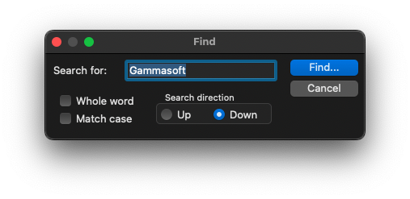

|
xtd
0.2.0
|
Loading...
Searching...
No Matches
find_dialog.cpp
demonstrates the use of xtd::forms::find_dialog dialog.
- Windows


- macOS


- Gnome


#include <xtd/diagnostics/debug>
#include <xtd/forms/application>
#include <xtd/forms/button>
#include <xtd/forms/debug_form>
#include <xtd/forms/find_dialog>
#include <xtd/forms/form>
using namespace xtd;
using namespace xtd::forms;
public:
form1() {
text("Find dialog example");
find_button.parent(*this);
find_button.text("find...");
find_button.location({10, 10});
find_button.click += [&] {
};
diagnostics::debug::write_line(ustring::format("Find next : find string [{}], match case [{}], search direction [{}], whole word [{}]", e.find_string(), e.match_case(), e.search_direction(), e.whole_word()));
};
}
private:
debug_form df;
button find_button;
};
auto main()->int {
application::run(form1 {});
}
Represents a form that displays debug form. This class cannot be inherited.
Definition debug_form.h:34
Represents a dialog box that displays find dialog.
Definition find_dialog.h:36
const xtd::ustring & title() const noexcept
Gets the find dialog title.
xtd::event< find_dialog, xtd::forms::find_event_handler > find_next
Occurs when the user click the find button.
Definition find_dialog.h:132
const xtd::ustring & find_string() const noexcept
Gets the string to find.
Provides data for the xtd::forms::find_dialog::find_next and xtd::forms::replace_dialog::find_next ev...
Definition find_event_args.h:23
Represents a window or dialog box that makes up an application's user interface.
Definition form.h:52
The xtd::forms namespace contains classes for creating Windows-based applications that take full adva...
Definition xtd_about_box.h:12
The xtd namespace contains all fundamental classes to access Hardware, Os, System,...
Definition xtd_about_box.h:10
Generated on Thu Mar 14 2024 22:04:48 for xtd by Gammasoft. All rights reserved.